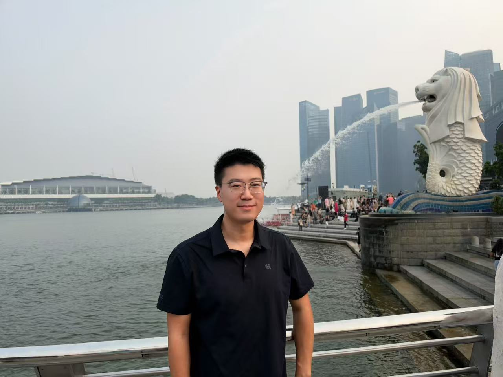
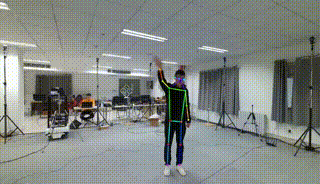
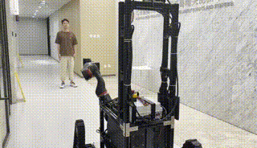
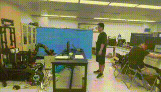
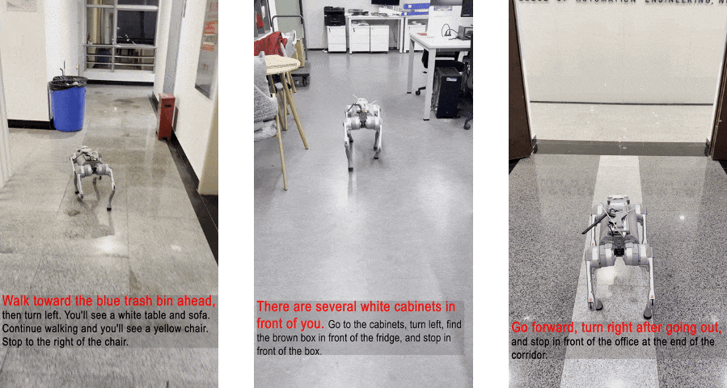
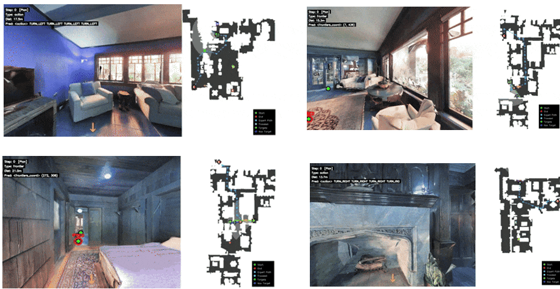

Bin Wang
Lecturer & Post-doctoral
School of Electrical and Electronic Engineering & School of Control Science and Engineering
Shandong University of Technology & Shandong University
Email: dqwangbin@sdut.edu.cn

About Me
I am a lecturer at the School of Electrical and Electronic Engineering, Shandong University of Technology. Now, I am a visiting researcher at ROSE-Lab, Nanyang Technological University, where I collaborate with Xudong Jiang (IEEE Fellow). In November 2024, I was a Postdoctoral Researcher at the VSISLab, School of Control Science and Engineering, working with my postdoctoral advisors Professor Wei Zhang and Professor Runmin Cong. Previously, I completed my doctoral degree at the School of Control Science and Engineering, Shandong University in September 2024, under the supervision of Professor Faliang Chang.
Research Interests
-
My recent research interests include:
- Video Understanding (e.g., Temporal Action Recognition, Privacy Action Recognition)



- Embodied Artificial Intelligence (e.g., Navigation, Grasping, and Reasoning)


Research Experience
-
Nanyang Technological University, NTU | School of Electrical and Electronic Engineering | Singapore | June.2026 - Now
Supervisor: Prof. Xudong Jiang (IEEE Fellow)
Visiting Researcher -
Shandong University, SDU | School of Control Science and Engineering | Jinan | Dec.2024 - Now
Supervisor: Prof. Wei Zhang and Prof. Runmin Cong
Post-doctoral
Admissions
Prospective Students: I am looking for motivated Master students for 2027.
- Recruiting undergraduate research assistants year-round. Please email your CV to contact me.
- 请想要申请读研/本科生研究助理的同学首先读这个文档: [招生要求与学生培养]
Publications
Selected Publications-
DecoVLN: Decoupling Observation, Reasoning, and Correction for Vision-and-Language Navigation
Zihao Xin, Wentong Li, Yixuan Jiang, Bin Wang , Runmin Cong, Jie Qin, Sheng-Jun Huang
IEEE Conference on Computer Vision and Pattern Recognition (CVPR), 2026 -
Agentvln: Towards agentic vision-and-language navigation
Zihao Xin, Wentong Li, Yixuan Jiang, Ziyuan Huang, Bin Wang, Piji Li, Jianke Zhu, Jie Qin, Shengjun Huang
European Conference on Computer Vision (ECCV), 2026 -
TDS-CLIP: Temporal Difference Side Network for Efficient Video Action Recognition[pdf][code]
Bin Wang , Wentong Li, Wenqian Wang, Mingliang Gao, Runmin Cong, Wei Zhang
IEEE Transactions on Circuits and Systems for Video Technology (TCSVT), 2026 -
Instruction Decomposition and Action Alignment for Vision-Language Navigation
Zihao Xin, Wentong Li, Yixuan Jiang, Bin Wang , Piji Li, Jianke Zhu, Jie Qin, Sheng-Jun Huang
International Conference on Machine Learning (ICML), 2026 -
Robust state-domain quality monitoring of precise satellite orbit and clock corrections considering reference receiver faults
Li, Ruijie and Li, Liang and Wang, Bin and Gao, Yuan and Li, MIn and Shi, Xiuyun
Measurement Science and Technology, 2026 -
Distributed quantum model learning for traffic density estimation [pdf]
Kewen Wang, Bin Wang (Corresponding author) , Wenzhe Zhai, Jing-an Cheng
Image and Vision Computing, 2026 -
Infrared and visible image fusion via cross-modal differential and dual-axis attention network [pdf] [code]
Shuo Li, Wei Song, Shuo Liu, Bin Wang (Corresponding author), Mingliang Gao
Measurement Science and Technology, 2025 -
An efficient motion visual learning method for video action recognition [pdf]
Bin Wang , Faliang Chang, Chunsheng Liu, Wenqian Wang, Ruidong Ma
Expert Systems with Applications, 2024 -
Human–robot interaction-oriented video understanding of human actions [pdf]
Bin Wang , Faliang Chang, Chunsheng Liu, Wenqian Wang
Engineering Applications of Artificial Intelligence, 2024 -
TODO-Net: Temporally observed domain contrastive network for 3-D early action prediction [pdf]
Wenqian Wang, Faliang Chang, Chunsheng Liu, Bin Wang , Zhengzhe Liu
IEEE Transactions on Neural Networks and Learning Systems, 2024 -
ACF-net: appearance-guided content filter network for video captioning [pdf]
Min Li, Dongmei Liu, Chunsheng Liu, Faliang Chang, Wenqian Wang, Bin Wang
Multimedia Tools and Applications, 2024 -
Dss-net: Dynamic self-supervised network for video anomaly detection [pdf]
Peihao Wu, Wenqian Wang, Faliang Chang, Chunsheng Liu, Bin Wang
IEEE Transactions on Multimedia, 2023 -
Magi-net: Meta negative network for early activity prediction [pdf]
Wenqian Wang, Faliang Chang, Jiachao Zhang, Rui Yan, Chunsheng Liu, Bin Wang , Mike Zheng Shou
IEEE Transactions on Image Processing, 2023 -
AE-Net: Adjoint enhancement network for efficient action recognition in video understanding [pdf]
Bin Wang , Chunsheng Liu, Faliang Chang, Wenqian Wang, Nanjun Li
IEEE Transactions on Multimedia, 2022 -
Ga-net: a guidance aware network for skeleton-based early activity recognition [pdf]
Wenqian Wang, Faliang Chang, Chunsheng Liu, Guangxin Li, Bin Wang
IEEE Transactions on Multimedia, 2021
Academic Services
- Conference Reviewer: AAAI2025, CVPR2025, ICCV2025, AAAI2027, CVPR2026, IROS2026, ICRA2026, AAAI2027, ICLR2027, CVPR2027
- Journal Reviewer: IEEE Transactions on Pattern Analysis and Machine Intelligence (TPAMI) IEEE Transactions on Image Processing (TIP) IEEE Transactions on Information Forensics and Security (TIFS) IEEE Transactions on Circuits and Systems for Video Technology(TCSVT) IEEE Transactions on Multimedia (TMM) IEEE Robotics and Automation Letters (RA-L) IEEE Transactions on Industrial Informatics (TII) Pattern Recognition (PR) Expert Systems with Applications (ESWA) Mechanical Systems and Signal Processing (MSSP) Artificial Intelligence in Medicine (AIIM)
Teaching
- Data Analysis and Mining, Shandong University of Technology, Fall Semester 2025.
- Computer Vision, Shandong University of Technology, Spring Semester 2026.